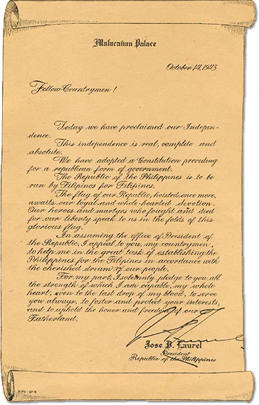

|
j
a v a s c r i p t |
October 15, 1943
Radio: Big raid on Rabaul. We used 250 planes including fighters and lost 12 in destroying 100 Japanese planes on the ground, 25 in the air, and damaging more. We sunk three destroyers, one sub tender, numerous small ships of 500 tons and under, and plenty of landing barges — altogether 121 naval craft, says the communiqué.

Laurel's Letter
Tribune: "Republic Inaugurated before 500,000 People." Quote from Laurel's speech: "It is the constitutional duty of every citizen to render personal military and civil service as may be regulated by law." It was a long speech; too idealistic and dull but it proved he's a joker. He asked the Americans to prove their friendship and love for the Filipinos, and all the while, day and night, by radio, newspapers and magazines, on the big screen, and in pacts and agreements, there is an attempt to make the Filipinos hate the Americans. "All we ask," he said, "is to be allowed to work out our salvation in our own way." Well, America will do just what Roosevelt and MacArthur promised and the Filipinos want: chase Laurel all the way to Tokyo. This morning Radio Tokyo said 300,000 attended the celebration and Japan and the Philippines had signed an alliance! Nowhere does the Tribune or Laurel mention this alliance — it was done behind our backs. |
|
|
|
|